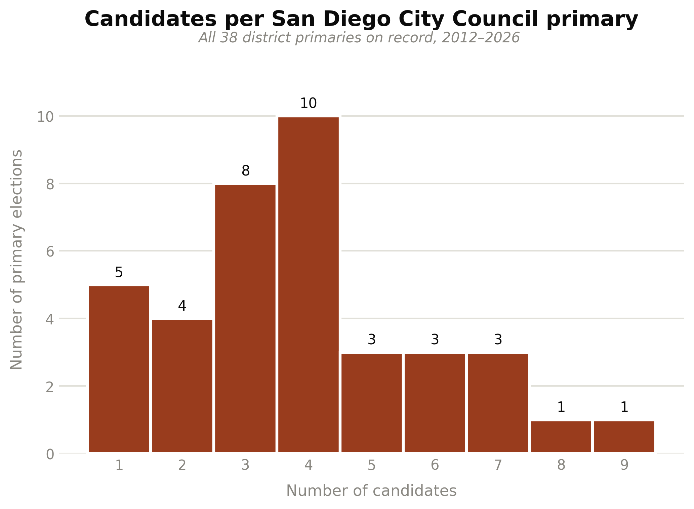

Abstract
We analyze geography, demographics, and voting patterns in San Diego, CA in order to compare the likely performance of various systems of electing members of the City Council. This report seeks to work with the most recent demographic data from 2020 Census, new election systems, the introduction of score-based voting, and more refined techniques. We will additionally be examining the impacts of the included reform proposals on representation for Asian voters, a community that represents 20% of the voting age population in the city.
Background
In 2011, San Diego City proposed for the first time a 9-district plan with one single member district representation ("2012 San Diego elections," Wikipedia; "After Redistricting, Advocates Argue for More Districts. Or None At All.," Voice of San Diego, Feb. 23, 2022). Since then the city has kept the 9 single-member council districts and has gone through a redistricting process in 2021 using the 2020 Census ("Redistricting Commission," City of San Diego; "San Diego finalizes new map of City Council districts," KPBS, Dec. 17, 2021). On the other hand, San Diego has staggered elections with a 4-year cycle--even districts (2, 4, 6, 8) in one cycle, odd districts (1, 3, 5, 7, 9) in the next. Additionally, the city uses a two-round system with a primary held in June followed by a runoff in November between the top-two candidates in each district.
It is valid to state that this redistricting process, like every one since the City Charter created the independent Redistricting Commission in 1992, was carried out by that independent commission rather than the city council ("City Charter, Article II," §§5-5.1; "Redistricting Commission," City of San Diego). Based on that, it is interesting to analyze how proportionality has been affected or improved for all communities. While White and Hispanic voters seem to achieve at least proportional representation regularly, the Asian population seems to be growing, yet they are still consistently underrepresented within city government. Black voters see consistent representation from their preferred candidates over time - primarily within District 4.
This report employs new and updated tools like GerryChain and VoteKit in order to simulate a variety of electoral systems and scenarios. Primarily, we look at simulations of multi-member districts elected by Single Transferable Vote (STV), low target-bloc turnouts, and Cambridge Ballot truncation.
Methodology
3.1 Districting Plan Ensembles
To generate a sufficient number of distinct districting plans, we use GerryChain to run a 10,000-step ReCom chain and subsample 100 plans that will be used in our election simulations. We do this a total of two times — once for each of the following configurations:
- 3 × 3 ensemble — each plan has 3 single-member districts built from precincts
- 9 × 1 ensemble — each plan has 1 multi-member districts built from precincts
Additionally, we run a election 1 x 9 where San Diego city is represented as one single District. In this scenario, we dont need to run a MC chain as we only going to work with one districting plan but to compensate for a reduction in the number of simulations, we increase the number of profiles from 10 to 100.
3.2 Voter Blocs and Candidate Slates
Mirroring past reports, we consider the four largest racial demographic groups when identifying blocs of voters with shared preferences and slates of candidates with similar policies and positions. In that sense, Slates and Voters are limited to and delineated as Black, Asian, Hispanic, and White. The voting bloc variables were constructed using Decennial Census variables from 2020 following the bloc classification methodology of MGGG.
3.3 Candidate Availability and Pool Size
The decision to simulate candidate availability per-district for each voting bloc relies on evidence found from previous Sand Diego City council elections. For instance, the last three San Diego City Council Elections had a pattern where candidates representing the Asian and Black community run only in the districts where their own community makes up a larger share of voters across districts (2020, 2022, 2024). Analyzing the bloc distribution of San Diego 9-district plan, District 4 and 6 have the highest shares of Black and Asian communities, respectively, and candidates running in those district are predominantly from those same communitities. Likewise, it is not common to find candidates from Asian and Black running on districts with a low share of their own communities.
Similarly, evidence suggest that the number of candidate or pool size that runs for each district is not homogenous. Last 20 years of elections, the distribution of candidates running per district is diverse. On primaries, the average number of candidate is 3.5, where there has been districts bellow the mean with only 1 candidate running and districts above with 9 candidates.

Based on the previous analysis, we endogenous determine the pool size and the candidate availability per slate as variables for each district and plan.
To model the pool size we assume the number of candidates (\(m\)) behaves as a Binomial Distribution with a floor set as the number of winner per district plus one. The floor \(k + 1\) ensures that we never have a scenario where the number of winners is equal to the number of running candidates as they will automatically will declare as winners.
The binomial distribution takes two parameters as inputs: \(n\) and \(p\).
Where:
\(k: \text{Number of winners per district}\)
\(n = \text{Maximun Number of candidate per district} - \text{Minimun Number of candidate per district} \)
\(p = \frac{E(m)- (k + 1)}{n}\)
Finally, we make an assumption that the racial composition of the slate pool will be roughly proportional to that of the VAP in each district. We use the bloc proportions to create an interval, with the intent of sampling candidates of different slates from it. However, before we do we first square each element, normalizing the “squared interval” over the sum of the squared values. This creates an “exaggeration” effect when we sample slate candidates. In other words, if a district has a large Black VAP, it's even more likely that the Black voter-preferred slate of candidates will be larger than the others. Similarly, if the Asian VAP is small it's much less likely that the Asian voter-preferred slate will have many candidates — if any, since we allow for slates to be empty. This is intended to model how community dynamics, segregation, or lack of institutional support may impact candidate availability across geography with respect to race. Finally, we modeled one scenario with a "cubic interval" for sensitivy results to increase the original scenario.
3.4 Voter Profile and Ballot Generation
For each district in all 50 district plans of our ensemble, we generate voter preference profiles — a collection of ballots from voters that rank available candidates. These rankings are determined by using VoteKit's Plackett-Luce and Bradley-Terry ballot generators, which model impulsive voter behavior and deliberative voter behavior, respectively. Each assumes that each voter bloc has a preference interval for each slate of candidates, along with a tuple of cohesion parameters — one parameter for each slate.
Both generators share the same two-stage process, and they only differ in how the first stage plays out. Before any ballots are drawn, each bloc's preference interval is assembled by taking that bloc's cohesion for a given slate and slicing off a sub-interval of that width, then filling it in with the individual candidates of the slate according to their support. We govern the within-slate split with a set of Dirichlet alphas — in this report we hold all alphas at 1, which means that once a voter has decided to reach for a particular slate, every candidate on that slate is treated as equally preferred. The cohesion parameters (the rows of the matrices below) therefore do all the work of ordering slates against one another, while the interval handles the ordering of candidates within a slate. What separates the two models is the story we tell about how a voter walks through that interval to produce a ranking.
The Impulsive Voter
The Plackett-Luce generator builds a ballot from the top down, one position at a time. Starting from the first-place slot, a voter in bloc reaches for a candidate from slate with probability equal to that bloc's cohesion for the slate, ; whichever slate is chosen then supplies a specific candidate by sampling from that slate's preference interval without replacement. The voter repeats this for the next position, renormalizing over whatever slates still have candidates left, and keeps going until the ballot is full. We call this the impulsive voter because they never look back — each ranking is a snapshot decision made in the moment, with no reconsideration of the choices already committed higher up the ballot. Concretely, a voter picks their favorite, then their next favorite from what remains, and so on, so the probability of a given slate ordering is just the product of these sequential draws.
The Deliberative Voter
The Bradley-Terry generator instead asks the voter to weigh the ballot as a whole. Rather than filling positions in sequence, the probability of a complete ranking is proportional to the product of the pairwise slate preferences across every pair of slates on the ballot — for a ranking that places slate above slate , each such head-to-head contributes a factor of . A voter effectively runs every candidate against every other in their head and only then settles on the ordering that is most internally consistent with all of those matchups at once. We call this the deliberative voter, since the ranking reflects a considered comparison of the full field rather than a run of top-down impulses. The candidate-filling stage is identical to Plackett-Luce — once the slate ordering is fixed, specific candidates are drawn from each slate's preference interval — so the two models diverge only in how much of the ballot a voter is imagined to be considering at once.
Cohesion Matrices
Rows are voter blocs, columns are candidate slates; each row sums to 1.
| bloc ↓ / slate → | White | Asian | Black | Hispanic |
|---|---|---|---|---|
| White | 0.80 | 0.10 | 0.05 | 0.05 |
| Asian | 0.15 | 0.80 | 0.02 | 0.03 |
| Black | 0.05 | 0.05 | 0.80 | 0.10 |
| Hispanic | 0.10 | 0.05 | 0.05 | 0.80 |
3.5 Cambridge Ballot Truncation
The ballots generated in Section 3.4 are, by default, full rankings — every voter ranks every candidate on the slate. However, we introduce a new scenario where voters don't all behave the same way, allowing for the existence of incomplete and bullet ballots.
Cambridge has run ranked-choice elections continuously since 1941, and a subset of those elections from 2009–2017 shows real dispersion in ballot length. Moreover, this distribution differs between two groups: the historical minority and majority slates.
To capture this behavior, we introduce a truncation process calibrated to real ranked-choice ballots from Cambridge, MA's 2009–2017 municipal elections. Using the same structure as VoteKit, we work with two empirical distributions over ballot length: one for ballots that started with a candidate from the historical majority (white) slate, and one for ballots that started with a candidate from the historical minority (Black, Asian, or Hispanic) slate.
Finally, the PL and BT preference profiles are truncated to a ballot length sampled from the historical distribution corresponding to each ballot's minority or majority group.
3.6 Voting Rules
Elections for each district are simulated using VoteKit's Elections module. We use the following voting rules with the corresponding district configurations:
| Voting Rule | District Configs | Seats/District | Description |
|---|---|---|---|
| Plurality | 9 × 1 | 1 (single-winner) | Voters' first choices are tallied and the candidate with the most votes wins outright — no majority required. |
| IRV (Instant-Runoff Voting) | 9 × 1 | 1 (single-winner) | The single-winner case of STV: last-place candidates are eliminated round by round and their ballots transferred to the next-ranked choice until one candidate holds a majority. |
| STV (Single Transferable Vote) | 3 × 3, 1 × 9 (at-large) | 3 or 9 (multi-winner) | Multi-winner ranked-choice rule using the Droop quota: candidates reaching the quota are elected and their surplus is redistributed, while last-place candidates are eliminated and transferred, until all seats are filled. |
| Cumulative | 3 × 3, 1 × 9 (at-large) | 3 or 9 (multi-winner) | Score-based multi-winner rule where each voter receives a budget equal to the number of seats and can distribute those points across candidates however they like, including stacking all of them on a single favorite; the top point-getters win. |
| Limited | 3 × 3, 1 × 9 (at-large) | 3 or 9 (multi-winner) | Score-based multi-winner rule identical to Cumulative except each voter's budget is capped below the number of seats (2 of 3 for the 3 × 3 config, 5 of 9 for at-large), so voters cannot concentrate every point on one candidate. |
| Two-round rules (Alaska- and Top-Two-style) | 9 × 1 | 1 (single-winner) | A PSMD primary narrows the field to a fixed number of finalists (\(m_1\) = 4 for the Alaska-style rule, 2 for the Top-Two-style rule), a new ballot profile is resampled over just those finalists, and the general round decides the winner via STV (Alaska-style) or Plurality (Top-Two-style). |
For each system, tiebreaks are performed randomly when needed.
Conclusion
[Conclusion to be written — edit
docs/prose/conclusion.md.]
Results by Scenario
Basic - 3 X 3
In this scenario, we explore the expected outcomes of a hypothetical electoral shift that redistricts San Diego into three districts with three elected members in each - running three different elections using Single Transferable Vote (STV), Cumlative, and Limited voting rules. STV uses the deliberative and impulsive models (representing 3000 elections each) while Cumulative and Limited use the "Name Cumulative" model that allows for voters to "plump" their votes on preferred candidates.
Basic - 3 X 3 (2 Blocs)
[Description to be written — edit
docs/prose/runs/basic-3-x-3-2-blocs.md.]
City Charter Amendment Proposal
[Description to be written — edit
docs/prose/runs/city-charter-amendment-proposal.md.]
Alternative Electoral Systems
Here, we take San Diego's current 9 X 1 district configuration and explore the expected outcomes of alternative election systems. San Diego's current electoral system is closest to Top Two, where the the top-two vote getters in a primary election advance to a runoff general election. We also look at Alaska, which is similar to Top Two but takes the top four winners in the primary and uses STV in the general election. Plurality is included due to its current popularity and status as the "default" for American elections, while IRV is included due to its rising popularity.
Hybrid System - 3x4 STV + 1x3 Plurality
[Description to be written — edit
docs/prose/runs/hybrid-system-3x4-stv-1x3-plurality.md.]